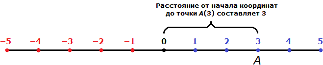
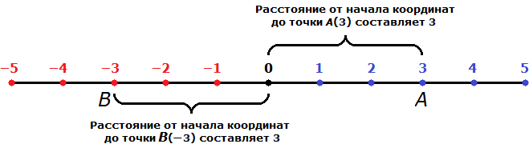
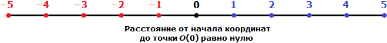
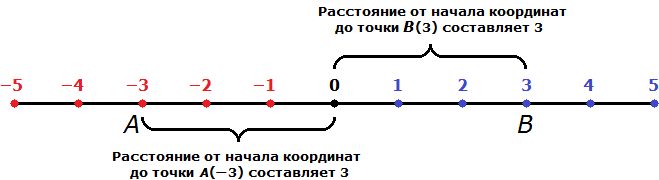

Мóдуль числá a — это расстояние от начала координат до точки А(a).
Чтобы понять это определение, подставим вместо переменной a любое число, например 3, и снова прочитаем его:
Мóдуль числá 3 — это расстояние от начала координат до точки А(3).
То есть модуль это ни что иное как обычное расстояние. Давайте попробуем увидеть расстояние от начала координат до точки А(3)

Расстояние от начала координат до точки А(3) составляет 3 (три единицы или три шага).
Модуль числа обозначает двумя вертикальными линиями, например:
Модуль числа 3 обозначается так: |3|
Модуль числа 4 обозначается так: |4|
Модуль числа 5 обозначается так: |5|
Мы искали модуль числа 3 и выяснили, что он равен 3. Так и записываем:
|3| = 3
Читается как «Модуль числа три равен три»
Теперь попробуем найти модуль числа −3. Опять же возвращаемся к определению и подставляем в него число −3. Только вместо точки A используем новую точку B. Точку A мы уже использовали в первом примере.
Модулем числа −3 называют расстояние от начала координат до точки B(−3).
Расстояние от одного пункта до другого не может быть отрицательным. Модуль это тоже расстояние, поэтому тоже не может быть отрицательным.
Модуль числа −3 равен 3. Расстояние от начала координат до точки B(−3) равно трём единицам:

|−3| = 3
Читается как «Модуль числа минус три равен три»
Модуль числа 0 равен 0, так как точка с координатой 0 совпадает с началом координат. То есть расстояние от начала координат до точки O(0) равно нулю:

|0| = 0
«Модуль нуля равен нулю»
Сделаем выводы:
- Модуль числа не может быть отрицательным;
- Для положительного числа и нуля модуль равен самомý числу, а для отрицательного – противоположному числу;
- Противоположные числа имеют равные модули.
Противоположные числа
Числа, отличающиеся только знаками называют противоположными.
Например, числа −2 и 2 являются противоположными. Они отличаются только знаками. У числá −2 знак минуса, а у числá 2 знак плюса, но мы его не видим, поскольку плюс как говорилось ранее, не записывают.
Еще примеры противоположных чисел:
−1 и 1
−3 и 3
−5 и 5
−9 и 9
Противоположные числа имеют равные модули. Например, найдём модули чисел −3 и 3
|−3| и |3|
3 = 3

На рисунке видно, что расстояние от начала координат до точек A(−3) и B(3) одинаково равно трём шагам.